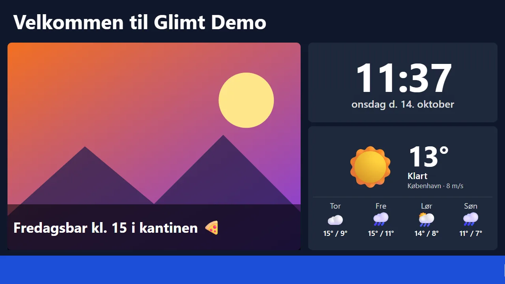
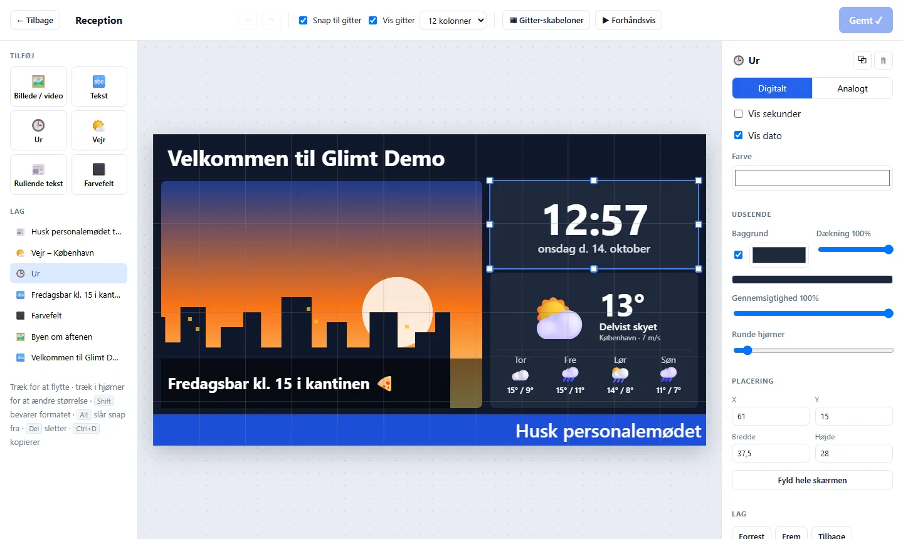
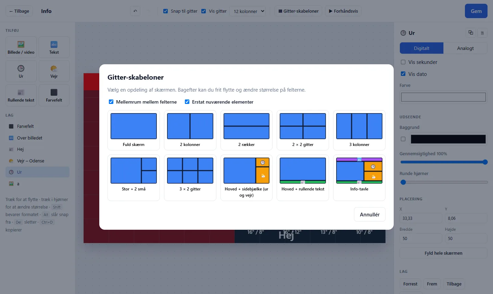
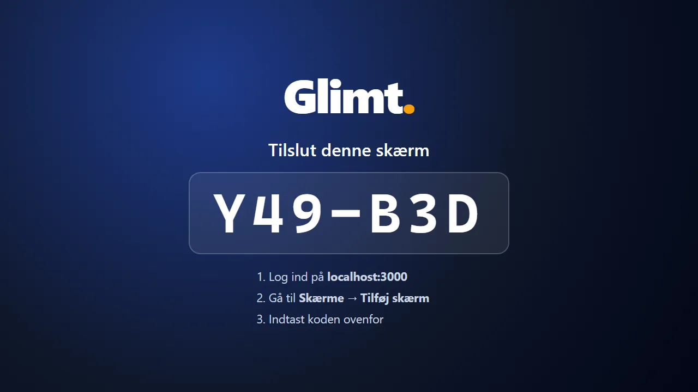

Glimt viser billeder, video, tekst, ur og vejr på jeres TV-skærme. En lille Raspberry Pi bag TV'et henter indholdet, og det hele styres fra én hjemmeside – fra PC'en eller mobilen.

Hver kunde får sin egen konto med egne skærme, brugere og indhold.
Velkomst i receptionen, menuen i kantinen, nøgletal, nyheder til medarbejderne og sikkerhedsinfo i produktionen.
Holdprogram, resultater, nyheder fra bestyrelsen og en sponsorvæg med roterende logoer i klubhuset.
Tilbud, åbningstider og kampagner – til butikker, caféer, skoler, klinikker, hoteller og fitnesscentre.
Træk billeder, videoer, tekst, ur og vejr ind på lærredet og placér dem frit.


Vælg en færdig opdeling af skærmen og udfyld den.
Uret kører på selve skærmen, så det altid passer. Vejret hentes automatisk for den by, du vælger.

Sæt en Raspberry Pi i TV'et. Skærmen viser en kode, som du skriver ind på hjemmesiden – så er den med.
Billeder og videoer trækkes ind på hjemmesiden – eller lav et design med tekst, ur og vejr.
Bestem rækkefølgen og hvor mange sekunder hver side skal vises.
Raspberry Pi i TV'et, indtast koden – og skærmen begynder at vise indholdet.
Testserveren kører på min egen computer, så den er kun online, når computeren er tændt. Admin-siden kræver login. Testskærmen kan åbnes af alle – sæt den i fuldskærm med F11.
Upload, playlister, tilslutning med kode og live-opdatering.
Frit layout med gitter, lag, ur, vejr og rullende tekst.
Færdigt system til SD-kortet, så skærmen starter af sig selv.
Egen server, invitationer på mail og et stort skabelonbibliotek.